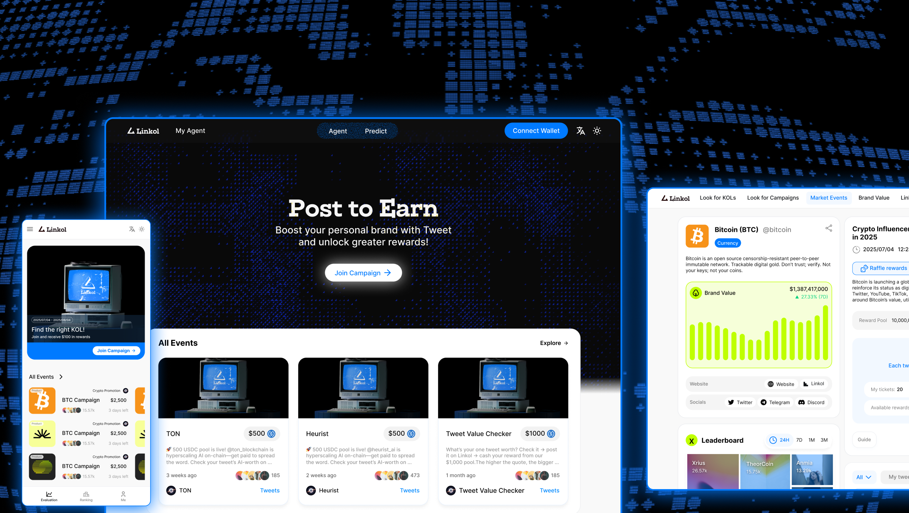
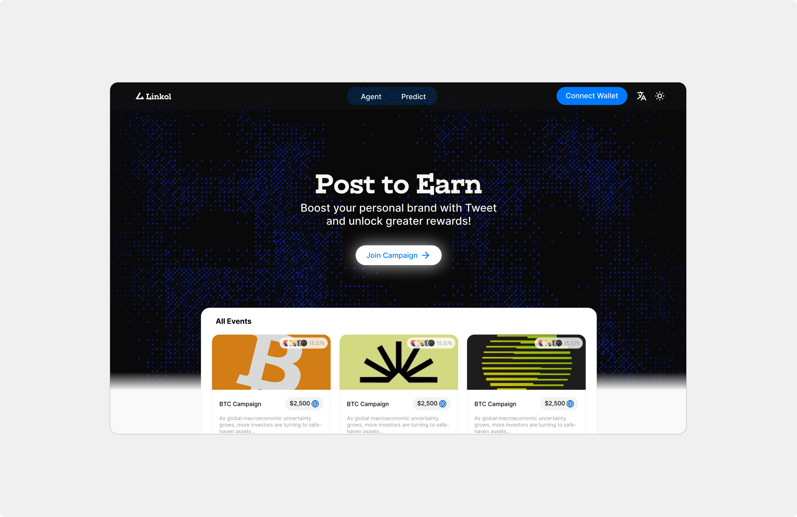
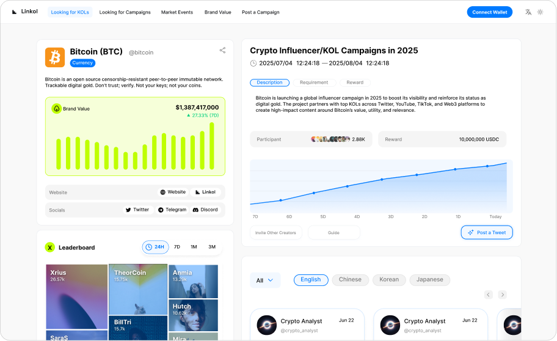
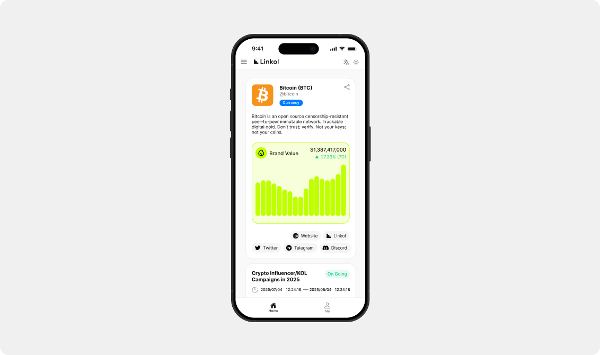
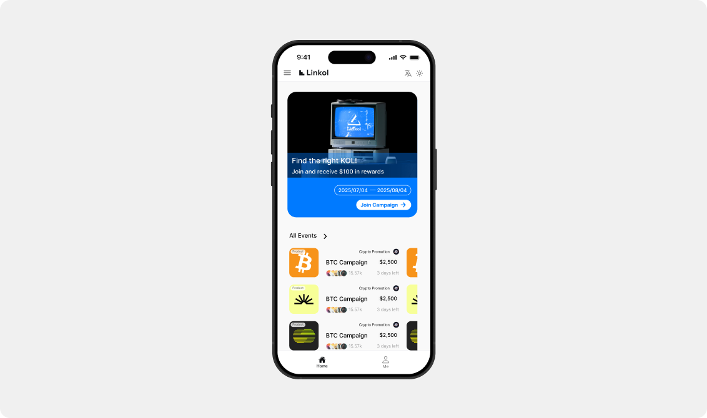
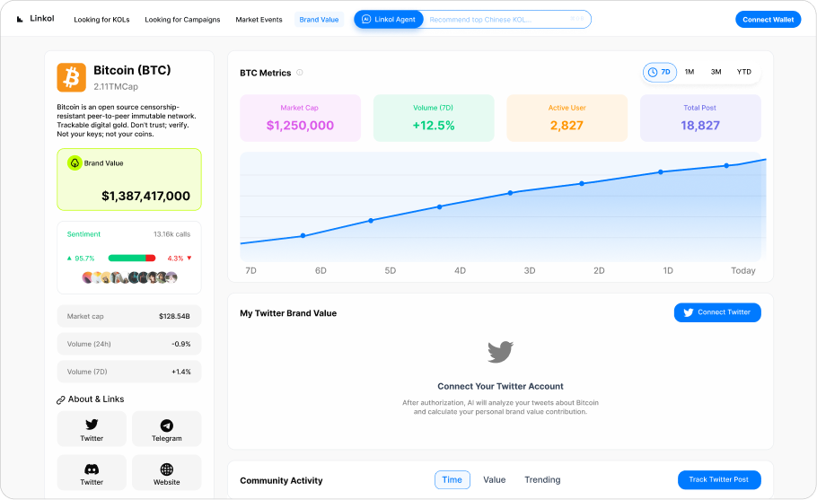
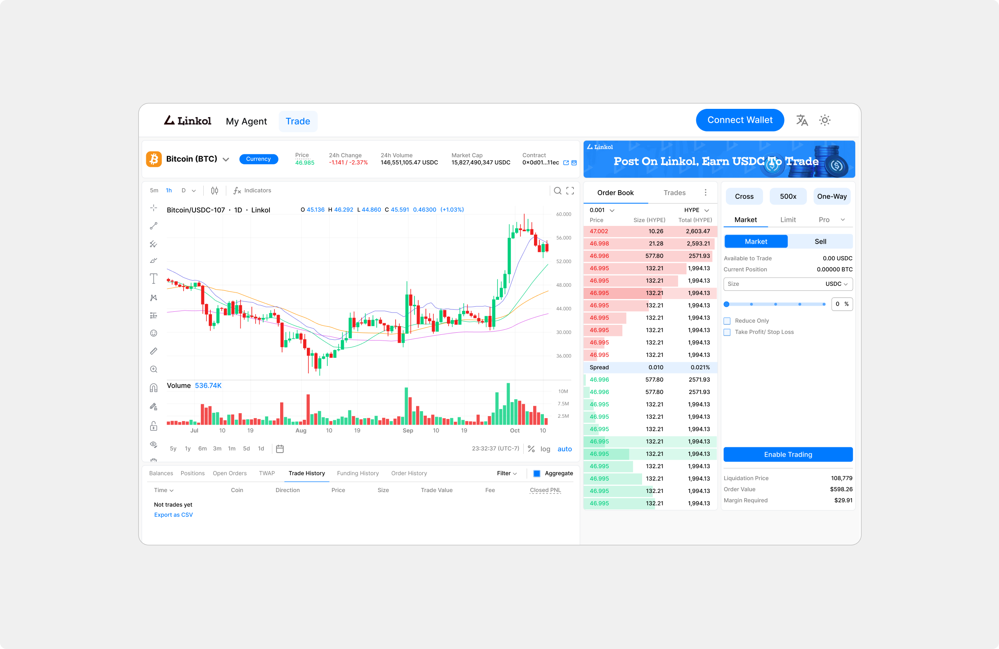
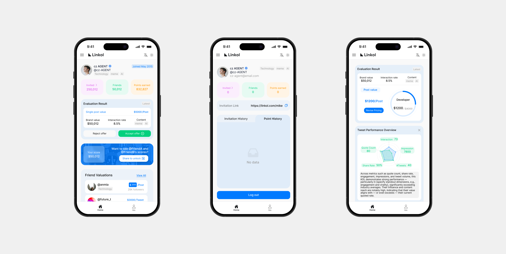

Linkol AI
Turning social influence into measurable, on-chain value

Context
Linkol AI shifted from connecting Web3 projects with established KOLs to making social participation accessible to everyday X users.
Solution
I designed a Tweet-to-Earn experience where users can discover campaigns, connect their X account, and see the value of their social activity.
The final interfaces bring together creator value, campaign participation, and trading across web and mobile.






